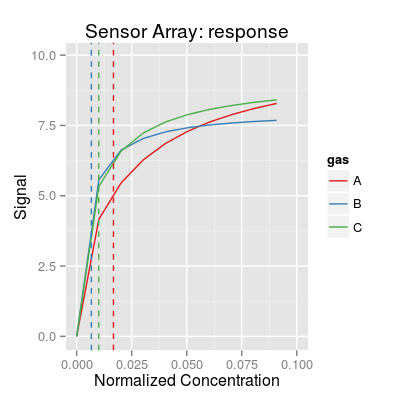

Method affinity.
Description
Method affinity evalates the affinity of sensors.
Details
The affinity coefficients are computed per analyte, and
express strength of a given sensor in response to the
given analyte. We use the definition of receptor/ligand
binding affinity from biochemistry here. The analog of
the dissociation constant Kd ic computed from the
sensibility curve, and the affinicty coefficient is given
by formula Ka = 1/Kd.
Examples
[,1] [1,] 59.80000 [2,] 149.50000 [3,] 99.66667[,1] [1,] 0.016722408 [2,] 0.006688963 [3,] 0.010033445# plot sensor response at conc. range of type 'inc' (see 'concSample' for more details) # - add lines related to computation of affinities plot(s, Ka=Ka, type="inc", affinity=TRUE)Warning message: Removed 270 rows containing missing values (geom_path).

#sa <- SensorArray(num=1:17, gases=c(1, 3)) #plot(sa, 'affinityMap')

See also
SensorArray